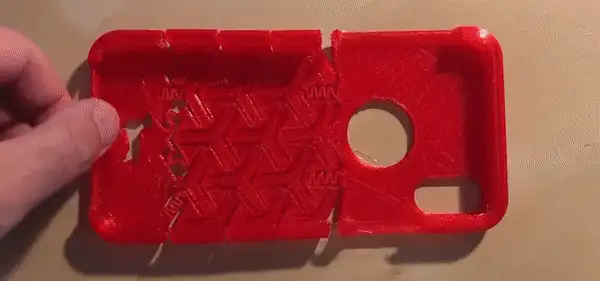
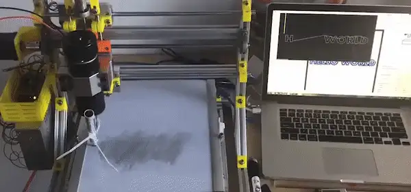

Media coverage of my research, and small projects I build in my spare time, usually with a 3D printer nearby.

An expandable, one-size-fits-all phone case that puts my MSc research into everyday use.

Designed and assembled from off-the-shelf and 3D-printed parts. The CAD model is open source on GrabCAD.
A small web tool for building CRediT author-contribution statements: add authors, assign roles, and copy a clean statement.